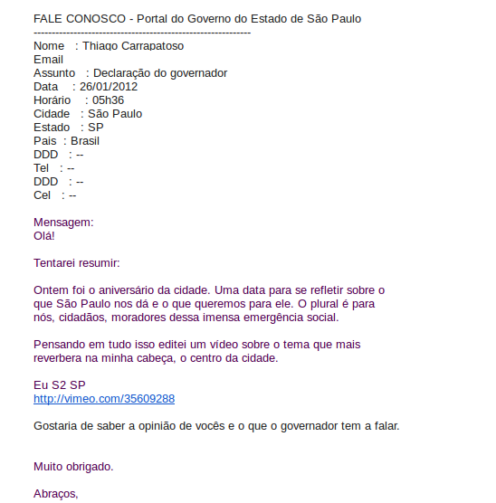

Na última quarta-feira, 25 de janeiro, São Paulo fez aniversário: 458 anos.
Podemos dizer que temos o que comemorar?
A cidade que pulsa possibilidades também aglomera massivamente excluídos, retirantes sociais, exilados de afeto, os que buscam oportunidades de vida$ nova$, enquanto dispersa os que precisam viver de forma menos claustrofóbica e com mais amor.
Thiago Carrapatoso, lá de longe, de Nova Iorque, acompanhou nos últimos meses o que aconteceu na cidade cinza e fez esse vídeo:
_e mandou para o Governador:

Será que ele vai responder com amor?